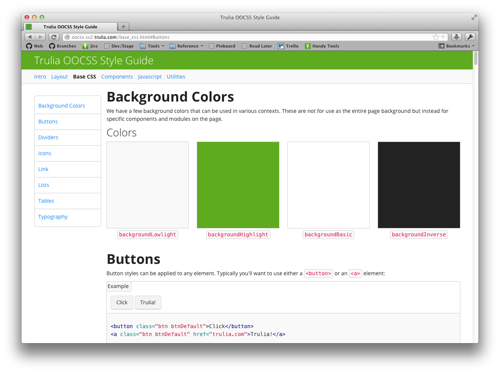

Hologram is a small Ruby script which generates a style guide based on comments found within an OOCSS project.
Hologram is built by Trulia
You can find an example project that uses hologram at github.
It is similar to Kneath Style Sheets and Styledocco

Hologram was written to make building a style guide as easy as maintaining your CSS. Your documentation is written right in your CSS files using a combination of YAML and Markdown. By using Markdown, you can easily format your docs however you wish and fall back to raw HTML for those tricky parts every styleguide has.
An important part of any style guide are code examples accompanying the visual output. Hologram makes this easy by extending Markdown code blocks that can be marked as examples.
```html_example
<h1>This is an example that should be displayed on the page and
as code</h1>
```
```js_example
<h1>This is an example that should be displayed on the page and
as code</h1>
```
Hologram can be installed by using gem install hologram
Additionally, Hologram is open source (licensed as XXX) and can be found on GitHub. Feel free to open any pull requests or issues (-: